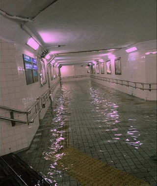

Liminal spaces are those eerie, ethereal places that bridge the gap between dream and reality. They can invoke a sense of nostalgia for a memory you’ve never had. They contain an unparalleled ominence, yet a familiar comfort in their simplicity, a clearness in their cogency. Liminal spaces are the midpoint between where you are and where you want to be. The Liminal Conservatory is a place for you to experience these places, immediately and effectively. If you wish to enter The Liminal Conservatory, click the button below to continue.